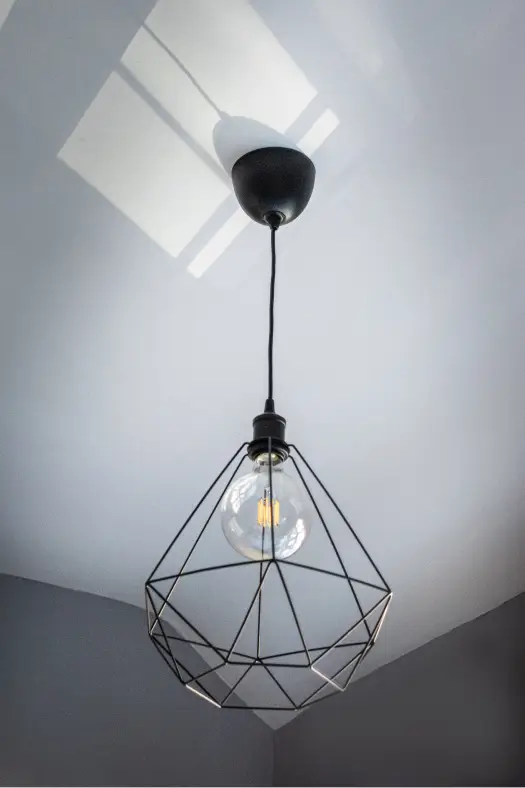
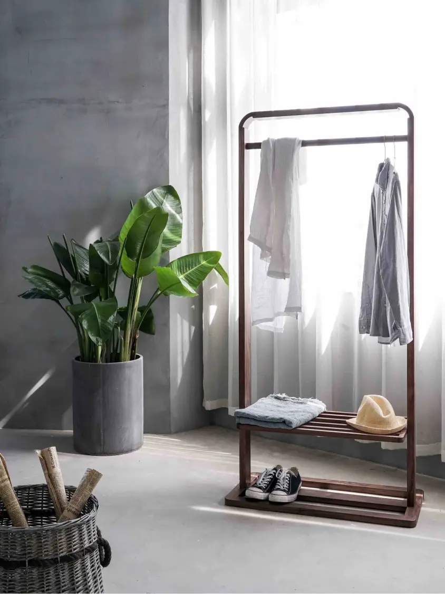

課後共學教育平台
給孩子安心探索的時間，他會自己長出想去的方向
我們不是補習班，不是才藝課，我們是陪孩子「練習成為自己」的地方
接任任務與角色，練習合作、表達與負責
在共學情境裡設計多元任務，讓孩子在角色扮演與協作中，慢慢練習溝通、理解他人並完成目標。
在情緒與人際的陪伴中變得穩定、自信
專注陪伴孩子認識情緒、理解人際互動，讓他們更穩定地面對挑戰，並逐步建立自信。
從興趣出發，找到自己的方向，建立真正內在的學習動力
以孩子的興趣為起點，陪伴他們嘗試不同領域，尋找適合自己的路，並培養內在動機。
我們期望打造一個孩子的「微型社會」課後基地
每天放學後，孩子走進我們的基地，帶著不同的個性與步伐，有人喜歡創作、有人愛動手做、有人默默觀察世界——
在這裡，他們都能用自己的方式，慢慢找到「為什麼而學」
我們的成果
在過去十年多的努力下
帶領過超過50位學生，讓他們有一個能安心探索、找到意義的地方，雖然這些學生不見得是從一年級待到六年級畢業，但我們一起嘗試過、冒險過
強調低師生比，了解每個孩子，幫助每個孩子找到學習的熱情與動機


你心動了嗎？你想了解更多嗎？你願意讓孩子給孩子不一樣的小學階段嗎？不要猶豫，與我們聯繫來了解更多
與你分享過去家長們的回饋
「孩子在這裡學會了主動分享與合作，回家後的笑容變多了，對學校生活也更有自信。」
高年級家長
「孩子在專題合作中被同學接納，開始主動提出想法，也學會傾聽他人。」
張媽媽
五年級家長
「老師願意細聽孩子的想法，給出具體的下一步建議，讓孩子學會規劃自己的學習。」
周爸爸
四年級家長
「老師們很細心陪伴情緒與人際互動，孩子變得更穩定，也願意和同學分享想法。」
李爸爸
三年級家長
「這裡的主題任務很活潑，孩子找到自己感興趣的方向，主動查資料、動手做，學習動力大增。」
林媽媽
中年級家長
「師生比很低，老師會仔細觀察孩子的步調，給出合適的引導，讓孩子安心成長。」
王爸爸
一年級家長